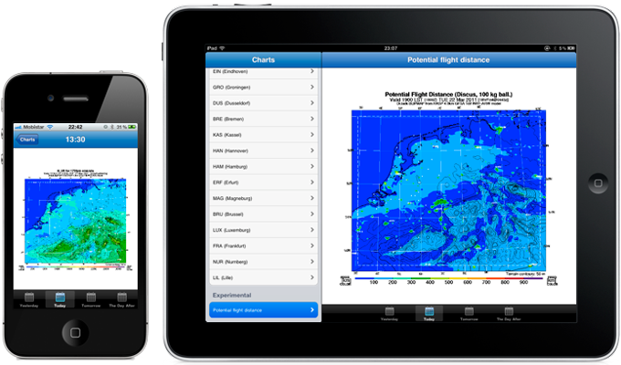
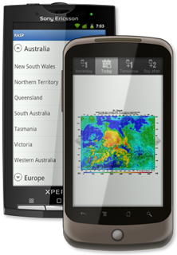

So, you are a glider pilot on an airfield ready for takeoff, but what about the weather forecast for today? Or you are on your way home on a Friday evening wondering whether you have to wake up early this weekend, what will the weather be like tomorrow?
“Soaring weather predications made easy for phones and tablets. Now available for iPod, iPhone and Android devices.”
RASP is a simple mobile application for your smartphone or tablet. It's a simple way to flip through the RASP charts for your region. Ow, and don't forget to pinch on a chart to take a closer look.
iPhone, iPod & iPad

Download
You can download RASP for your iPod, iPhone and iPad for free from the Apple App Store. You can even take a look at the source code if you are an iOS developer, patches are welcome!
Charts
Following regions are available in the iOS version. Charts are downloaded from their respective websites, make sure to pay them a visit and send them a thank you note.
Africa
Europe
- Alps
- Baltic Area
- Benelux
- Finland
- Germany
- Germany ~ Black Forest
- North/Central France
- Pyrenees
- Slovakia
- United Kingdom
- Western Swiss Alps
United States
Australia
Android

Download
You can download RASP for your Android smartphone for free from the Google Android Market.
Charts
Following regions are available on the Android version. Charts are downloaded from their respective websites. Make sure to pay them a visit and send them a thank you note.
Africa
Europe
- Alps
- Baltic Area
- Benelux
- Finland
- Germany
- Germany ~ Black Forest
- North/Central France
- Pyrenees
- Slovakia
- United Kingdom
- Western Swiss Alps